00:02在运行梯度下降时，你如何判断它是否正在收敛？
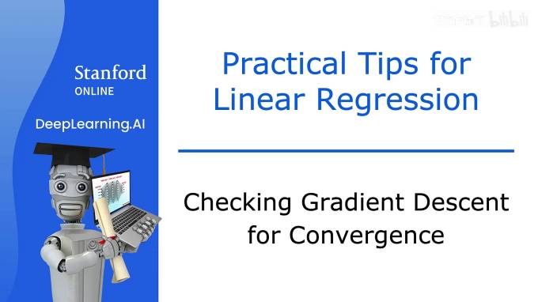
00:08也就是说，它是否正帮助你找到接近代价函数全局最小值的参数。
00:15通过学习识别一个运作良好的梯度下降实现是什么样子的，我们也将在一个后面的视频中，更好地选择一个好的学习率 alpha。
00:28提醒一下，这是梯度下降的规则，其中一个关键选择就是学习率 alpha 的选择。
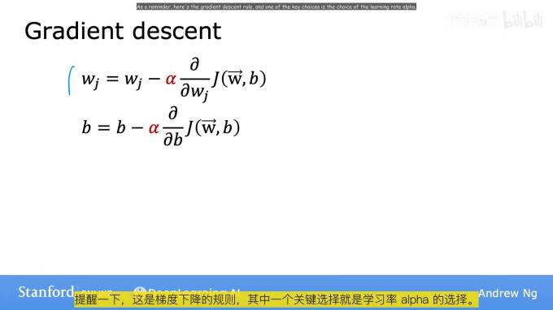
00:37这是我经常做的一件事，以确保梯度下降运作良好。
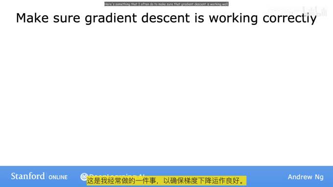
00:42回想一下，梯度下降的工作是找到希望能最小化代价函数 j 的参数 w 和 b。
00:50所以，我经常做的是画出代价函数的图，这个 j 是在训练集上计算的，并且我会画出梯度下降每一次迭代时 j 的值。
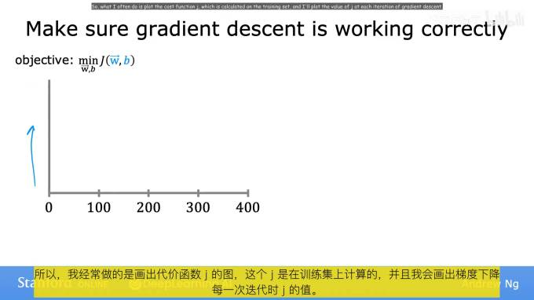
01:03记住，每一次迭代意味着在同时对参数 w 和 b 进行一次更新之后。
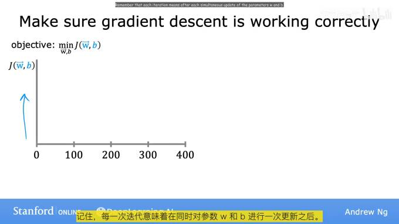
01:11所以，在这张图中，横轴是你至今已运行的梯度下降的迭代次数。
01:21那么，你可能会得到一条看起来像这样的曲线。
01:25注意，横轴是梯度下降的迭代次数，而不是像 w 或 b 这样的参数。
01:34这不同于你之前看过的那些图，那些图的纵轴是代价 j，而横轴是像 w 或 b 这样的单个参数。
01:47这条曲线也被称为学习曲线。
01:51请注意，机器学习中使用的学习曲线有几种不同的类型，你在本课程稍后也会看到其中的一些。
02:00具体来说，如果你看曲线上的这个点，这意味着在你运行梯度下降一百次迭代后，即对参数进行一百次同时更新后，你得到了某些 w 和 b 的学习值。
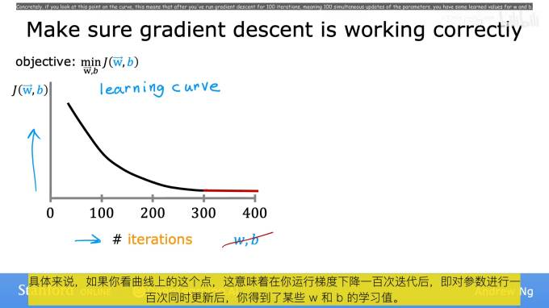
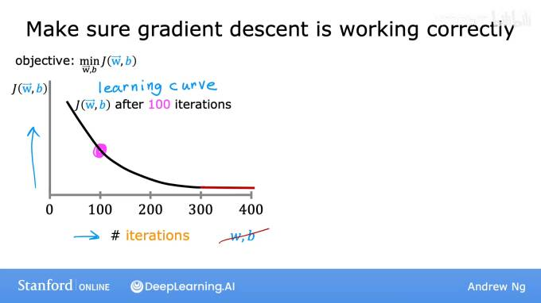
02:17如果你用这些在一百次迭代后得到的 w 和 b 的值来计算代价 jw b，你就会得到这个代价 j 的值，也就是纵轴上的这个点。Andrew。
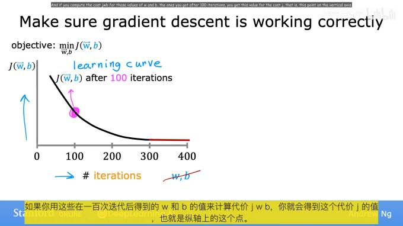
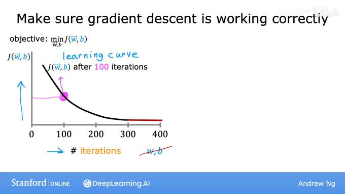
02:34而这里的这个点对应的是你经过两百次梯度下降迭代后所得到的参数的值。
02:44所以，观察这个图有助于你了解你的代价在梯度下降的每次迭代后是如何变化的。
02:52如果梯度下降运作正常，那么代价 j 应该在每一次迭代后都减小。
02:59如果 j 在迭代一次后反而增加了，那意味着要么 alpha 选择得不好，通常是 alpha 太大了，要么就是代码中可能存在 bug。
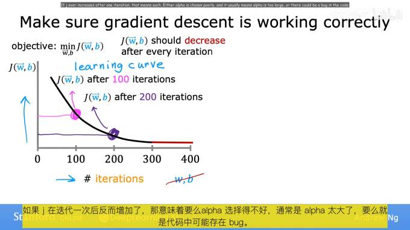
03:13这个图能告诉你的另一件有用的事是，如果你看这条曲线，到你可能达到三百次左右的迭代时，代价 j 正在趋于平稳，不再怎么下降了。
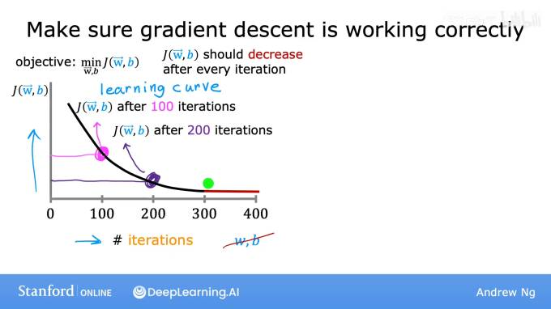
03:28而到了四百次迭代时，看起来曲线已经平坦了。
03:33所以这意味着梯度下降已经差不多收敛了，因为曲线不再下降了。
03:42通过观察这条学习曲线，你可以尝试发现梯度下降是否在收敛。
03:50顺便说一下，梯度下降收敛所需的迭代次数在不同的应用中可能差异很大。
03:58在某个应用中，它可能仅三十次迭代就收敛了。
04:02而对于一个不同的应用，它可能需要一千次或十万次迭代。
04:08事实证明，很难提前预测梯度下降需要多少次迭代才能收敛，这就是为什么你可以创建一张这样的图，一条学习曲线，来尝试找出你何时可以停止训练你的特定模型。
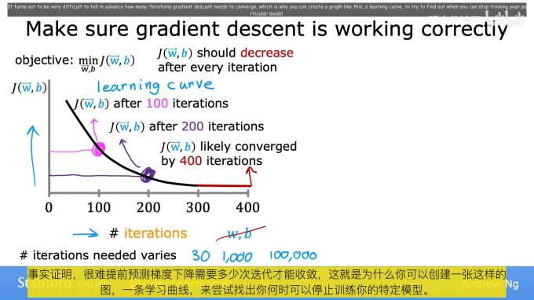
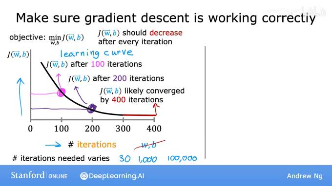
04:26另一种决定模型何时训练完成的方法是使用自动收敛测试。
04:34那么，让我们设 epsilon。
04:36这是希腊字母 epsilon。
04:40让我们设 epsilon 为一个代表很小数字的变量，比如零点零零一或者十的负三次方。
04:49如果代价 j 在单次迭代中下降的幅度小于这个数字 epsilon，那么你很可能处在你左边看到的这条曲线的平坦部分，你就可以宣布收敛了。
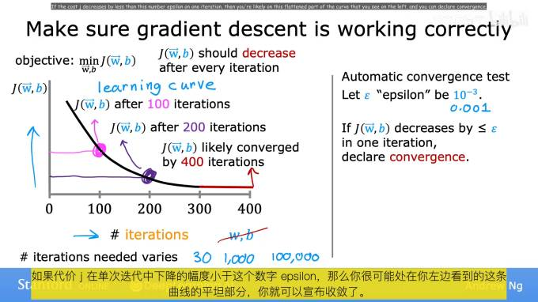
05:02记住，收敛希望能表明你找到了参数 w 和 b，它们接近 j 的最小可能值。
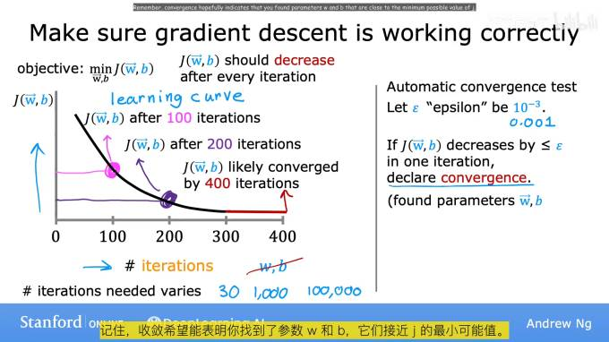
05:12我通常发现选择合适的阈值 epsilon 相当困难，所以我实际上倾向于看像左边这样的图，而不是依赖自动收敛测试。
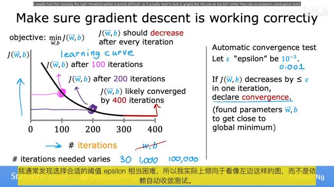
05:24如果梯度下降可能没有正常运行，观察这个小图也能告诉你或者给你一些提前预警。
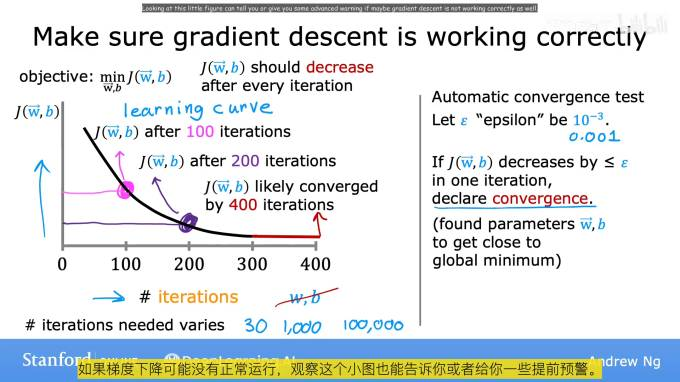
05:34所以你现在已经看到了，当梯度下降运行良好时，学习曲线应该是什么样子的。
05:41让我们带着这些见解，在下一个视频中，来看看如何选择一个合适的学习率。